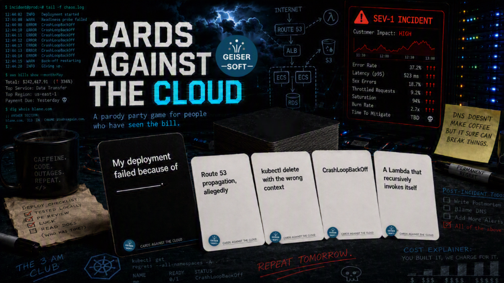

A party game for people who have explained a five-figure cloud bill to a CFO who thought the cloud was free.
What Is It
Cards Against the Cloud is what happens when Cards Against Humanity gets an AWS certification and Magic: The Gathering discovers CloudFormation. It is a party game for cloud architects, DevOps engineers, platform teams, security people who have stopped being surprised by anything, and that one person who insists their Terraform module is basically art.
The deck mixes dark humor, cloud jargon, and just enough Lambda cold-start lag to make any architect cry. AWS carries the most weight, because AWS causes the most suffering, but Azure, GCP, and OCI all get what is coming to them. Kubernetes, Terraform, IAM, FinOps, on-call, AI hype, and the general indignity of enterprise IT are all represented.
Everything in the deck is original. Nothing was copied from anywhere. Some of it was, however, lived.
Get the Deck
Download the print-ready PDFs below. Each file is laid out nine cards per page at standard playing card size (2.5 × 3.5 inches).
Black Cards
Prompt cards. The questions, fill-in-the-blanks, and setups that start each round.
Download Black CardsWhite Cards
Answer cards. The punchlines, confessions, and reasons you are not sleeping tonight.
Download White CardsInstructions
Full rules of play, nine optional house rules, and printing notes.
Download InstructionsMake Your Own Cards
Download the blank templates and add your own prompts and answers to expand the deck.
Black Card Template
Blank prompt card template. Write your own questions and fill-in-the-blanks.
Download TemplateWhite Card Template
Blank answer card template. Write your own punchlines and confessions.
Download TemplateHow to Play
- Deal ten white cards to each player.
- Pick a judge. Traditional method: whoever got paged most recently.
- Judge draws a black card and reads it out loud.
- Everyone else picks the white card from their hand that will land hardest, and passes it in face down.
- Judge shuffles submissions, reads each combination out loud with commitment, and picks a winner.
- Winner keeps the black card as a Service Credit (worth almost nothing, and you have to ask for it).
- Draw back up to ten, rotate the judge left (same way on-call rotates), and go again.
First to seven Service Credits wins. In practice you will play until the pizza runs out, which is the more honest ending anyway.
Full rules including nine optional house rules are in the instructions PDF.
Printing Tips
- Print at 100% scale. Turn off "fit to page" and "shrink oversized pages" — these shift cut lines in ways you will notice by card forty.
- Start on page 2 of each file. Page 1 is the cover sheet.
- Cut along the gray grid lines. A paper trimmer will save you roughly an hour compared to scissors.
Cardstock in the 200–300 gsm range feels like a real deck. Plain paper works fine for a first playtest. Print the white deck first — the black cards use full bleed black fill and will make your printer file a complaint with HR.
A Note on Content
The deck leans dark, sarcastic, and occasionally suggestive, in the tradition of the game it parodies. It stays away from anything built on racism, abuse, or explicit material. If a card does not suit your group, pull it. There are 550 of them and nobody will miss one.
License
Cards Against the Cloud © Geisersoft, licensed under the Creative Commons Attribution 4.0 International License.
You can share, print, remix, expand, and use it commercially without asking permission. One condition: give credit, link back to the license, and note whether you changed anything.
Contribute a Card
Open an issue or pull request on the GitHub repo. The bar is simple: it has to be true enough to hurt and short enough to fit on a card. Cards that are specific beat cards that are general — "A NAT Gateway nobody remembers creating" works; "Cloud costs" does not.
Cards Against the Cloud is a parody. It is not affiliated with, endorsed by, or connected to Cards Against Humanity LLC, Amazon Web Services, Microsoft, Google, Oracle, IBM, or any other company named on a card. No production systems were harmed in the making of this deck. Several were harmed independently, which is where most of the material came from.